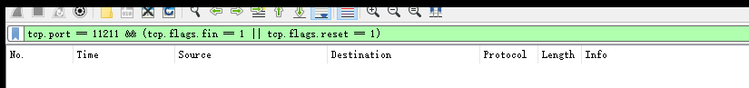
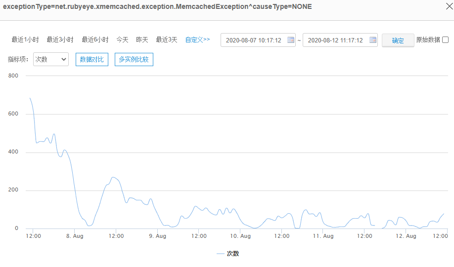
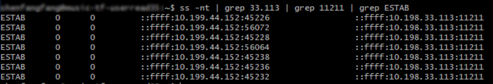
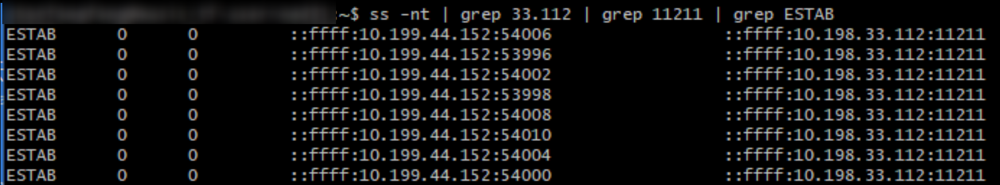

网络的锅还是应用的锅？
Contents
前不久工作中遇到一个有意思的事，和我之前看林沛满《wireshark抓包的艺术》中的故事有点像，也有点像packetbomb 里面记录的一些故事，所以我给记录一下。
缘起
业务方向云计算投诉，说他们的应用，过云计算的dgw服务，长连接会被断开，导致应用服务日志里面打一串错误堆栈。
云计算的dgw服务就是一个内部的网关，用来转发vpc内虚拟机到物理机之间的流量，这个是云计算提供出去的。既然业务说了，那云计算就先自查。
抓包
于是我架了个服务过dgw，用长连接测了一下。按照奥卡姆剃刀原理，如无必要，勿增实体。我们先模拟一个最简单的长连接测试一下。（业务出问题的是一个缓存应用）
服务端起了一个 ipd
|
|
客户端使用wrk
|
|
wrk这边如果使用 –header “Connection: Close"的话，就是短连接，每次都会新建连接去请求。 另外模拟长连接最简单的方式应该是使用iperf起一个服务端、客户端即可。
抓包，用wireshark Expert info看了一下，是没有异常的包的。

当然这个时候也不太说的准，因为毕竟我们的测试环境和业务的不完全一样。也有可能业务的虚拟机问题，也有可能是对端物理机的问题，也有可能是中间链路上的问题。都说不准。
这时候业务继续反馈，说看发生的云主机，机柜和交换机分布也没啥特点。基本上都有问题。而且之前是没有问题的。是在某一个时间点之后出现了问题，但是在那个时间点之前云计算就没有做过版本升级了。当然这段时间内，其他运维操作还是有的，业务最近由于有重大活动要开展，还是上下不少dgw网关进行扩容，而且之前有台机器物理机有crc异常，然后给下线了。
这个时候就需要业务进行抓包了。就跟打官司一样，谁主张，谁举证。让业务在有问题的机器上面直接抓，它出问题看着是1-2分钟就出现一次，那抓个10分钟就够了。
|
|
出乎意料的是（并没有），竟然一个错包都没有。PE一度认为是看错了。然后我们说，把包都抓下来。然后放到wireshark里面看看，结果还是一样。

代码
这个时候还是得看看代码，出错地方抛的异常是这样的：
|
|
可以看到是连memcached缓存业务。看调用次数异常，也基本上和业务高低峰时间吻合。高峰期间调缓存次数多，出错的次数也更多。并且在压测场景下，异常数量出现的更多。

放狗一搜，看到这个库issue里面有出现过这个，https://github.com/killme2008/xmemcached/issues/68。说memcached server的ip地址变了，客户端使用的session还是老的ip，没变。
这时候，业务也观察到，存在问题的机器上，应用mc客户端到某个或某些mc服务端的连接有丢失且不会重建。
业务mc客户端配置了8线程，理论上对每个mc服务节点会有8条TCP长连接。观察异常机器 ，对mc服务节点 10.198.33.113:11211 只有7条连接：

正常的机器有8条连接。

结论
经过上面的排查，问题基本清楚了。因为现在已经封板了，不会再上下机器，所以业务方先把有问题节点的服务先重启了一遍，规避问题。
推测是dgw变更，导致网络有连接断开，且触发了客户端代码缺陷，出现了僵尸 Session（java session对象存在但底层tcp连接不存在，且不会去重连）。真正要修复问题需要升级xmemcached这个库的版本。
|
|
而且根据出问题的这一行（send函数在506行），放狗一搜，这个用的xmemcached版本是老的不得了，是上古时期的版本。可见业务方这种公共库函数升级不太积极啊。 :)
Author smasterfree
LastMod 2020-08-17